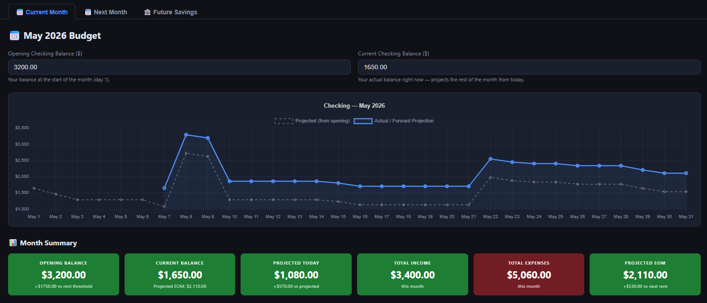

A selection of personal and academic projects — spanning local AI, interactive dashboards, computer vision, and web tools. Click any project to explore the details.
In Development

STARLING — Local LLM Voice Interface
Voice-driven local LLM interface via Ollama — Whisper STT, Kokoro TTS, streaming responses, and an animated HUD overlay. Fully local, no cloud APIs required.
Read More →
Music League Stats
An interactive web dashboard for competitive music leagues built with vanilla JS, D3.js, and Chart.js — featuring leaderboards, song stats, a fan chord map, trend analysis, economy breakdowns, and auto-generated round headlines. No backend required.
Read More →
Used Car Dashboard
Full-stack data science project analysing ~60,000 used car listings scraped from AutoTrader.co.uk across 39 makes. Cleaned with Pandas, price predicted by a BaggingRegressor (R² ≈ 0.88), and explored through an interactive dashboard hosted on GitHub Pages.
Read More →
Proof of Concept

WV Perinatal Partnership
A mobile-first proof-of-concept web app for the West Virginia Perinatal Partnership, guiding users through a decision-tree questionnaire to connect them with the right perinatal specialists and nearest resources based on their location. Built with React, Vite, and Tailwind CSS.
Read More →
In Development

Personal Robot
A fully local, open-source robot built in progressive phases — from a conversational LLM (Phi-4-mini via Ollama) through RAG memory, voice I/O, computer vision (YOLOv8), and face recognition, to a self-contained physical robot on a Raspberry Pi 5. No cloud APIs.
Read More →
In Development

Personal Dungeon Master
A locally-run AI Dungeon Master powered by Ollama that guides players through D&D 5e adventures — with persistent memory via a knowledge graph, a seeded dice engine, and spoiler protection. No cloud APIs.
Read More →
Facial Recognition & Mask Detection
OpenCV identifies individual faces in an image, then feeds each cropped face into a Keras CNN built on ImageNet to classify whether the person is wearing a mask or not.
Read More →
In Development

Family Tree
An interactive family tree built as a standalone web page — visualising ancestry relationships with a collapsible D3.js node graph, biographical profiles, and full zoom and pan. All rendered client-side with no backend.
Read More →
Proof of Concept

Personal Budget Dashboard
Interactive personal finance dashboard tracking income, expenses, and savings with configurable categories and dynamic Chart.js visualisations — fully client-side, no backend, no data leaving the browser.
Read More →